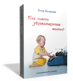

Стратегия эффективного написания статей
Эту стратегию я представлял на сертификацию на своем втором мастерском курсе. После чего коллеги НЛПеры попросили меня поделиться ей и с ними. Для удобства я опубликовал ее здесь.
Приведенный ниже алгоритм не является стратегией, как таковой. Это "костыль", помогающий активизировать метапрограммы и реп-системы, которые необходимы для эффективного написания текстов. Использовать его необходимо только на начальном этапе, до тех пор, пока активизация необходимых метапрограмм и реп-систем не сложится в стабильный паттерн. У меня этот паттерн заякорен на белый лист бумаги и ручку :).
Когда навык начнет воспроизводиться автоматически, алгоритм станет другим, т.к. многие процессы будут идти уже параллельно. Как - не возьмусь описывать, так как, в зависимости от человека, это может отличаться. Подозреваю, что это зависит от того количества параллельных процессов, на которое способен этот человек.
В идеальном случае, параллельно идут все процессы, включая вычитание лишнего - тогда готовый текст получается сразу после написания. Несколько раз я ловил себя на том, что пользуюсь этой стратегией при устных рассказах.
Алгоритм
-
Выписываешь список тем и выбираешь из них ту, о которой хочется писать больше всего.
-
Определяешь "рамку" статьи - для кого ты пишешь и зачем.
-
По выбранной теме выписываешь несколько тезисов, которые, на твой взгляд, ее раскроют. Столько тезисов, сколько придет в голову.
-
Выбираешь тот тезис, с которого хочется начать. Затем садишься в визуальную позу (спина откинута на спинку стула, руки на затылке, взгляд направлен выше средней линии) и представляешь себе общий (обобщающий) образ тезиса с непроявленными деталями (пустотами или нечеткостями в картинке).
-
Как только образы начинаю появляться (приходить), описываешь все, что видишь, подряд, пока тезис не будет исчерпан (пока не возникнет ощущение, что образ описан полностью). При этом можно переходить от тезиса к тезису, использовать матерные и неуместные выражения, делать грамматические ошибки и т.д. Нельзя только исправлять и редактировать написанное. Но можно добавлять.
Если по ходу в голову придут заметки для других тезисов, их можно просто записать ниже, не прекращая описывать основную линию.
-
Когда тезис исчерпан (описан) полностью, начинаешь редактировать его. Для этого вспоминаешь "рамку" статьи - для кого и зачем пишешь, представляешь перед собой читателей статьи и читаешь им написанное, смотря за их реакцией. Ориентируясь на их реакцию, выкидываешь все несущественное, и если хочется что-то переформулировать или добавить, делаешь это.
Когда редакция написанного закончена, переходишь к следующему тезису, о котором хочется в этот момент писать, и повторяешь шаги 4-6.
- По окончании всей статьи, читаешь ее "для читателей" и смотришь, улавливается ли ими общая логическая нить и логична ли для них последовательность блоков. Если захочется, можно переставить блоки местами, удалить несущественное, переформулировать фразы и добавить слова или предложения.
Методика встраивания стратегии проста до безобразия. Нужно просто строго следуя шагам алгоритма написать столько статей, сколько необходимо, чтобы алгоритм стал шаблоном мышления. Обычно, 2-4 статьи. После этого, алгоритм откладывается в сторону, и вы просто пишете, так, как вам удобно.
Успехов!
Егор Булыгин,
2005 г.
"Как писать увлекательные статьи?" - тренинг в коробке.